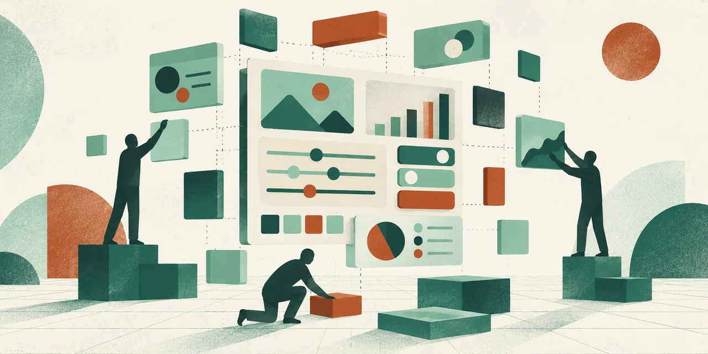

AI 인사이트 · 해설
에이전트 결제에서 사람의 승인은 어디에 남나
소식 · 원문 발표 2026-11-13 · 사이트 수록 2026-11-16 · 해설 본문 예상 읽기 약 3분
ChatGPT Wallet의 초기 설계에서 에이전트는 구매를 진행하고, 사람은 거래마다 항목과 금액, 사용할 카드를 확인한 뒤 승인합니다. 카드를 한 번 등록했다고 이후 결제까지 모두 맡기는 방식은 아닙니다. OpenAI는 사용자가 Face ID나 지문 같은 보안 확인을 거쳐 건별로 승인하고, 승인 기록도 구매마다 남는다고 설명했습니다.
승인 뒤에는 결제 네트워크가 실제 카드번호 대신 결제 토큰을 발급합니다. 토큰은 카드번호뿐 아니라 보안코드와 유효기간도 대체하며, OpenAI는 사업자와 에이전트에 실제 카드 정보가 전달되지 않는다고 밝혔습니다. 이 설계에서 에이전트가 맡는 범위는 상품을 찾고 결제 과정을 준비하는 데까지 넓어집니다. 돈을 내겠다는 최종 의사는 거래별 확인을 통해 사람에게 남습니다. 정보 비공유와 토큰 사용은 회사가 설명한 구조이며, 잘못된 구매나 사기가 발생하지 않는다는 보장은 아닙니다.
초기 제공 대상은 미국의 18세 이상 ChatGPT Pro 구독자이며, dots에서 먼저 시작합니다. OpenAI는 American Express, Mastercard, Visa와 협력한다고 발표했고, 출시 시점에는 거래 수수료를 받지 않는다고 했습니다. 다른 국가나 요금제로 확대되는 일정은 공개된 근거에서 확인되지 않습니다. 기존 카드 혜택과 적격 분쟁 보호가 유지된다는 내용도 회사 설명입니다.
지갑은 사용자 화면만 바꾸는 제품도 아닙니다. 사업자는 에이전트가 상품을 찾고 장바구니를 다룰 수 있도록 상품 정보 피드와 플러그인, WebMCP 도구를 제공할 수 있습니다. Commerce Partner Playbook은 CDN과 방화벽이 Web Bot Auth 서명 요청을 인식하고 결제·위험 관리 시스템이 에이전트 거래를 정상 거래로 처리하도록 권고합니다. 에이전트가 상품을 비교하고 주문하려면 사람이 읽는 상품 페이지와 카드 결제 외에 사업자 쪽 정보·도구·인증 경로도 필요하다는 제안입니다.
OpenAI는 장기적으로 지출 한도·구매 범주·기간을 미리 정하는 위임 방식을 계획한다고 밝혔습니다. 이는 초기 제공에서 확인된 기능이 아닙니다. 거래마다 사람이 확인하는 방식과 사전 설정한 조건에 따라 에이전트가 결제하는 방식은 책임 배분이 다릅니다. 위임 범위가 넓어질수록 사용자가 무엇을 허용했는지, 조건을 벗어난 거래를 누가 막는지, 취소와 분쟁은 어떻게 처리되는지가 중요해집니다. 현재 공개된 설명에는 실제 거래 성공률, 사기 거절률, 분쟁 처리 결과가 없습니다. 초기 Wallet이 맡기는 것은 구매 과정이고, 결제 의사는 건별 승인으로 남습니다. 사전 위임으로 바뀔 때는 설정한 한도와 실제 거래를 어떻게 대조하는지가 새로운 확인 지점이 됩니다.